Clustering
Do large US cities fall into natural types?
Clustering searches for groups in data without being told what the groups are. Here, the 50 cities that have both air and health records are grouped by their air quality, weather and respiratory health profiles, with two different clustering families applied to the same data. The write-up is organized into Overview, Data Prep, Code, Results and Conclusions.
Overview
Clustering is an unsupervised method: it receives only numbers describing each observation and looks for groups in which members are more similar to each other than to members of other groups. No labels guide it, so the groups it finds are a form of discovery, and their meaning has to be checked afterwards.
Partitional clustering, of which k-means is the best-known example, decides the number of groups k in advance. The algorithm places k centroids, assigns every observation to the nearest one, moves each centroid to the average of its members, and repeats until nothing changes. The result is a single flat set of groups that minimizes the total squared distance between observations and their centroids. Because the starting centroids are random, the algorithm is restarted many times and the best run is kept.
Hierarchical clustering builds a family of nested groupings instead of one. The agglomerative version used here starts with every city as its own group and repeatedly merges the two closest groups, and the full merging history is drawn as a tree called a dendrogram. Cutting the tree at a chosen height gives any number of groups, so k can be decided after seeing the tree. The distance between two groups depends on the linkage rule, and here the average linkage rule is used, which takes the mean distance between all pairs of members.
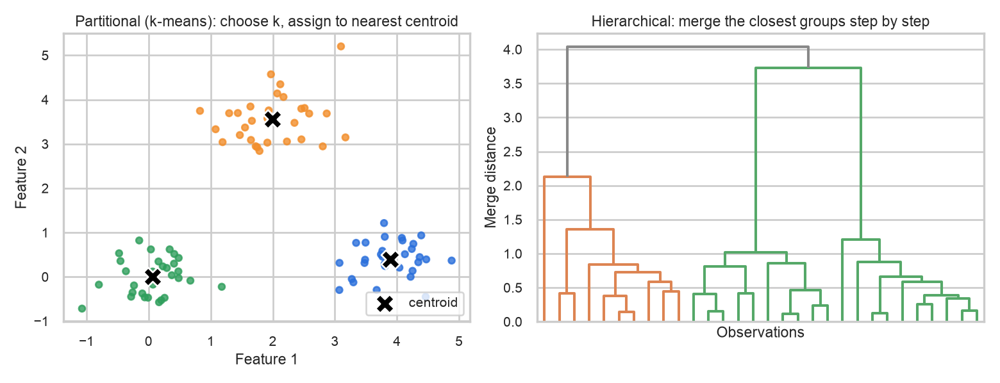
Distance metrics
Every clustering method depends on a definition of distance. Euclidean distance, the straight-line distance between two points, is used for k-means because the method minimizes squared Euclidean distance. Cosine distance (one minus the cosine similarity) is used for the hierarchical clustering, as the assignment requires. It measures the angle between two vectors instead of the gap between them, so it compares the shape of two cities' profiles: which variables are unusually high or low relative to the average, regardless of how extreme the overall values are. The silhouette score, which compares how close each city is to its own cluster against the nearest other cluster, is used to judge the number of groups (values near 1 mean well-separated groups, values near 0 mean overlapping groups, and negative values suggest a misplaced city).
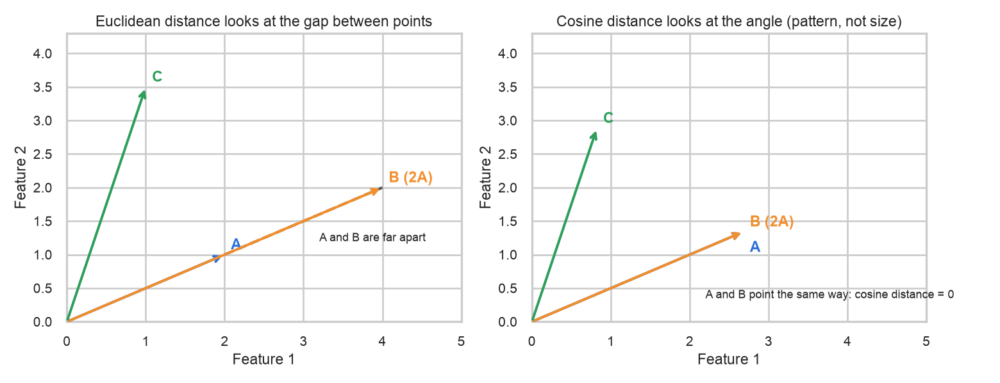
How clustering is used here
The Introduction asked whether US cities can be grouped into a small number of types. Clustering answers this by looking at all variables together: yearly pollution levels, weather, and the county health rates for asthma, COPD, smoking and other conditions. The labels that are known (region, and the High/Low asthma level) are deliberately kept out of the clustering and used only afterwards, to check whether the discovered groups agree with geography or with disease burden. Agreement would show that the groups capture something real, and disagreement would show where cities behave differently from their neighbors.
Data Prep
Clustering needs unlabeled numeric data only. Every column must be a number, because distances are computed between rows, and no label such as the city name, region or asthma category may be included, because a label would either break the distance calculation or leak the answer into the groups. Variables on large scales would also dominate the distances: carbon monoxide is measured in the hundreds while the unhealthy-day share is between 0 and 1. Every column was therefore standardized to a mean of 0 and a standard deviation of 1 (a z-score).
The sample comes from the city-level table, which has one row per city (50 cities, no missing values). Twenty numeric columns were kept: air quality (mean and 95th percentile of PM2.5, nitrogen dioxide, sulphur dioxide, carbon monoxide, mean daily maximum ozone, share of days with AQI above 100), weather (mean temperature, total precipitation, mean wind speed) and health (county prevalence of uninsured adults, high blood pressure, asthma, heart disease, COPD, smoking, depression, diabetes, physical inactivity, obesity). PM10 and mean AQI were left out because they nearly duplicate PM2.5 and the unhealthy-day share and would count the same signal twice. The city name, state, county, region, latitude, longitude, population, number of days, and the High/Low asthma and PM2.5 levels were removed before clustering and kept aside to interpret the results.
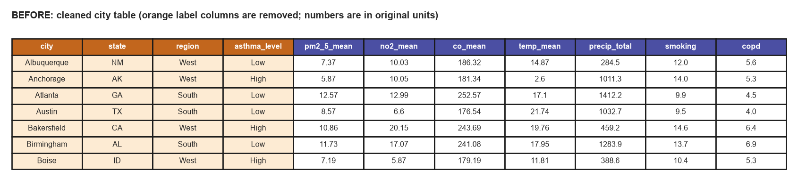
The transformation, step by step
- Remove the labels. City, state, county, region, the High/Low asthma level and the PM2.5 level, latitude, longitude, population and number of days were taken out of the matrix and stored separately. They are used only afterwards, to interpret the clusters.
- Drop duplicated signals. PM10 and mean AQI were removed because they nearly repeat PM2.5 and the unhealthy-day share.
- Standardize every column. Each value had its column average subtracted and was divided by the column standard deviation. For example, Albuquerque's mean PM2.5 of 7.37 (average of all 50 cities 10.54, standard deviation 2.53) becomes -1.26, and its carbon monoxide of 186.3 (average 223.7, standard deviation 46.6) becomes -0.80, so both now sit on the same scale.
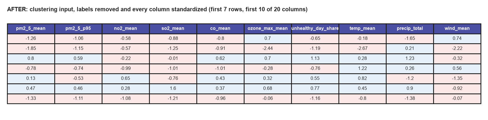
- clustering_input_numeric.csv: the 50 x 20 numeric matrix in original units (row order follows the city table)
- clustering_input_scaled.csv: the same matrix after standardization, which is what the algorithms receive
- city_air_weather_health_clean.csv: the cleaned city table the sample was taken from
Code
The analysis is written in Python 3.14 with pandas, numpy, scikit-learn (KMeans, silhouette_score), scipy (linkage, dendrogram, pdist), matplotlib and seaborn. K-means used 50 random restarts and a fixed seed so that results can be reproduced. The hierarchical clustering used cosine distance with average linkage, because Ward linkage is defined only for Euclidean distance.
04_clustering.pyon GitHub: builds the sample, runs k-means for k = 2 to 10, runs hierarchical clustering, computes silhouette scores and draws every figure on this tab- city_clusters.csv and clustering_results.json: the cluster assignment of every city and the numbers quoted below
Results
K-means and the choice of k
K-means was run for every k from 2 to 10. The sum of squared distances within clusters falls from 758 at k = 2 to 546 at k = 4 and 335 at k = 10, a steady decline without a sharp elbow, which suggests that the cities do not form tightly separated groups. Three values of k (3, 4 and 5) are compared in detail below, with k = 2 as the reference point.
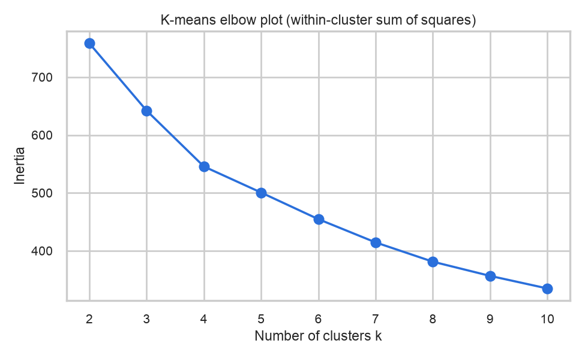
The silhouette method points to k = 2 as the best value for k-means, with an average silhouette of 0.214, followed by k = 3 (0.196), k = 4 (0.190) and k = 5 (0.183). All of these values are low: scores below roughly 0.25 are usually read as weak structure, so the cities form overlapping groups along a continuum and not distinct clusters. The two-group solution splits the cities into 25 and 25, separating the cooler cities with lower smoking, obesity and COPD (average COPD 4.7%) from the warmer South, Midwest and desert cities with higher rates (average COPD 6.5%).
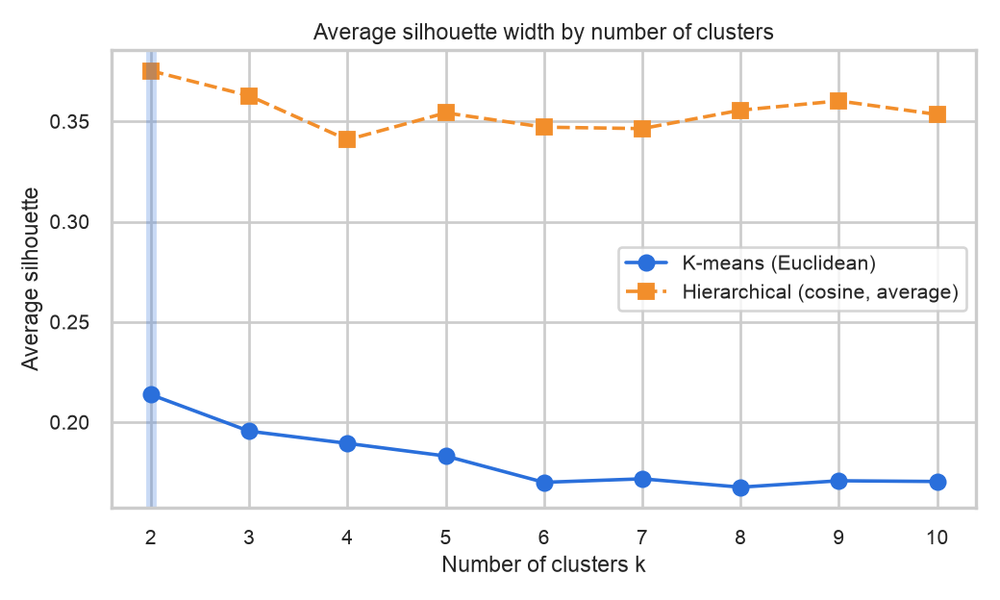
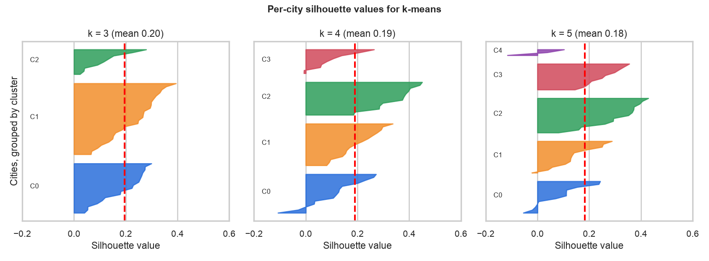
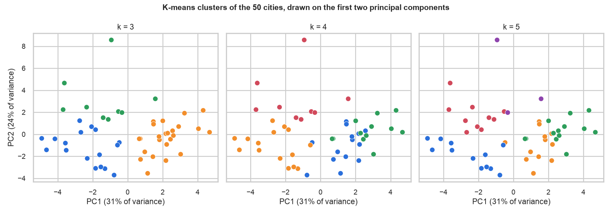
Although k = 2 has the highest silhouette, it only separates two broad halves. The four-group solution (k = 4) was chosen for interpretation because it divides the cities into groups that can be described in plain terms while the silhouette cost is small (0.190 against 0.214). It is shown in the profile heatmap, map and table below, and the choice is a judgment, not something the silhouette demands.
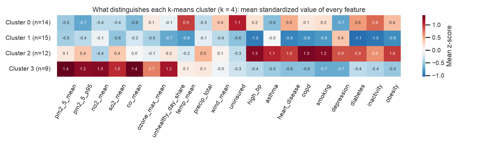
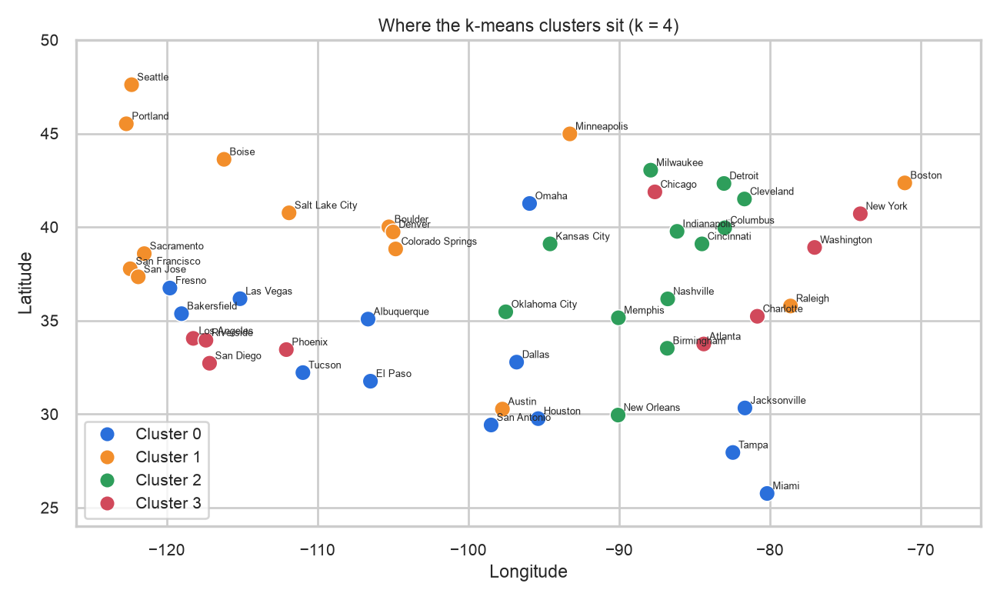
| Cluster (k = 4) | Cities | Members | PM2.5 | Temp (C) | Smoking % | COPD % | Obesity % | High-asthma cities |
|---|---|---|---|---|---|---|---|---|
| 0 Warm, low-pollution cities with many uninsured adults | 14 | Albuquerque, Bakersfield, Dallas, El Paso, Fresno, Honolulu, Houston, Jacksonville, Las Vegas, Miami, Omaha, San Antonio, Tampa, Tucson | 9.3 | 20.4 | 12.5 | 5.8 | 33.4 | 3 of 14 |
| 1 Cool, clean and healthier cities, mostly in the West | 15 | Anchorage, Austin, Boise, Boston, Boulder, Colorado Springs, Denver, Minneapolis, Portland, Raleigh, Sacramento, Salt Lake City, San Francisco, San Jose, Seattle | 9.3 | 11.9 | 10.1 | 4.6 | 26.1 | 9 of 15 |
| 2 Heartland and Deep South cities with heavy lung-disease burden | 12 | Birmingham, Cincinnati, Cleveland, Columbus, Detroit, Indianapolis, Kansas City, Memphis, Milwaukee, Nashville, New Orleans, Oklahoma City | 10.9 | 14.7 | 14.9 | 7.2 | 36.5 | 11 of 12 |
| 3 Large metropolitan areas with the dirtiest air | 9 | Atlanta, Charlotte, Chicago, Los Angeles, New York, Phoenix, Riverside, San Diego, Washington | 14.0 | 16.2 | 10.3 | 4.9 | 28.0 | 2 of 9 |
The held-out labels agree with the clusters in an informative way. Cluster 2 (heartland and Deep South) contains 11 cities that were labeled High asthma out of 12, while cluster 0 and cluster 3 are mostly Low asthma (11 of 14 and 7 of 9). Region labels were not used, yet cluster 2 contains no Western city and cluster 1 contains 11 Western cities out of 15, so the clusters recover geography on their own.
Hierarchical clustering with cosine distance
Hierarchical clustering was run on the same standardized matrix with cosine distance and average linkage. The tree has a cophenetic correlation of 0.74, which means that the distances implied by the tree reproduce the original pairwise distances reasonably well. The last merge, which joins the final two groups, happens at a height of 1.26, the merge before it at 0.97 and the one before that at 0.93, followed by a drop to 0.82.
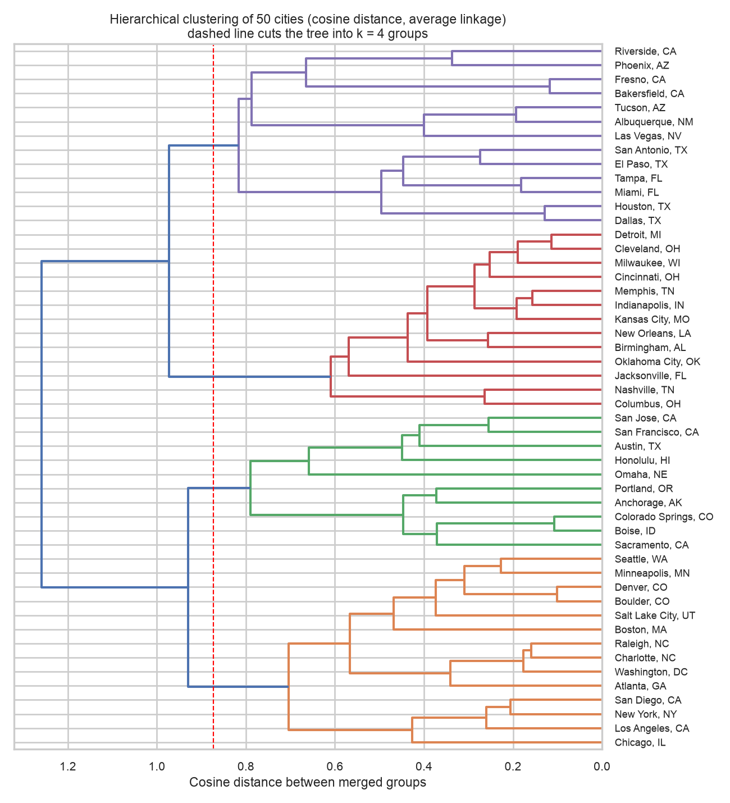
Value of k suggested by hierarchical clustering. The largest gap in the tree and the best silhouette (0.375 at k = 2, against 0.363 at k = 3, 0.341 at k = 4 and 0.354 at k = 5) both suggest k = 2, which matches the k-means result. As with k-means, a finer cut into four groups is easier to interpret and has the next clear gap in the tree.
How the two methods compare
The two methods agree strongly on the coarse structure and less on the details. At k = 2 the groupings are almost identical (adjusted Rand index 0.92, where 1 means identical partitions). At k = 3 the agreement falls to 0.47 and at k = 4 it is 0.54, rising to 0.67 at k = 5, probably because cosine distance emphasizes the shape of a profile while k-means also responds to how far a city lies from the average.
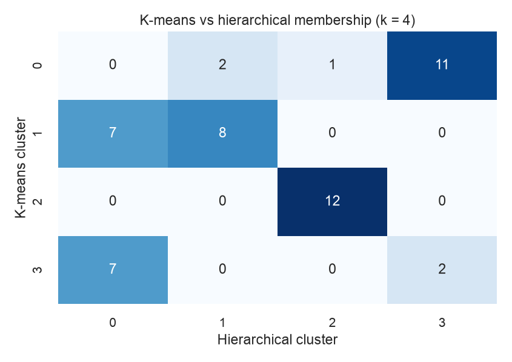
The hierarchical four-group cut gives a Midwest-and-South group of 13 cities (the k-means heartland cluster plus Jacksonville), a group of 13 hot or humid cities (Phoenix, Riverside, Houston, Dallas, Miami and others), a group of 14 that mixes large polluted metropolitan areas with cooler cities (Atlanta, Boston, Chicago, Denver, Los Angeles, New York and Seattle, among others), and a group of 10 mostly coastal and mountain cities. K-means keeps the nine most polluted metropolitan areas together, whereas the cosine-based tree places several of them with cooler cities that share a similar pattern.
Conclusions
American cities do fall into recognizable types, although the borders between the types are blurry. Four kinds of city stand out. Large metropolitan areas with the dirtiest air include Los Angeles, New York, Chicago, Atlanta, Washington, Phoenix and San Diego. Heartland and Deep South cities, such as Detroit, Cleveland, Memphis, Nashville and New Orleans, carry the heaviest burden of lung disease. Cool, clean cities, mostly in the West (Seattle, Denver, Boise, Salt Lake City and others), have the lowest average rates of smoking, obesity and COPD. Warm, low-pollution cities, such as Houston, Miami, Las Vegas and Tucson, have clean air but many adults without health insurance.
The most important lesson is that the dirtiest air and the sickest lungs are not in the same places. The big metropolitan areas with the most polluted air have relatively low rates of COPD and smoking, while the heartland cities with only moderately polluted air have the highest rates of COPD, asthma, smoking and obesity. This matches the earlier finding that cities with more fine-particle pollution did not have more asthma, and it suggests that smoking, weight, income and access to health care shape how common lung disease is in a city at least as much as the outdoor air does. Weather and geography sort the cities as well, since the warm group averages about 20 degrees Celsius and the cool group about 12.
These types are a helpful summary and not hard categories. Many cities sit between two groups, and two different grouping methods agreed on the broad picture but placed some cities differently. The air quality values are model estimates, the health values describe whole counties, and only 50 cities were studied, so the findings should be read as patterns and not as proof. For decision makers, the results suggest that smog and smoke warnings matter most in the big metropolitan areas, while stop-smoking and health insurance programs matter most in the heartland and the Deep South.